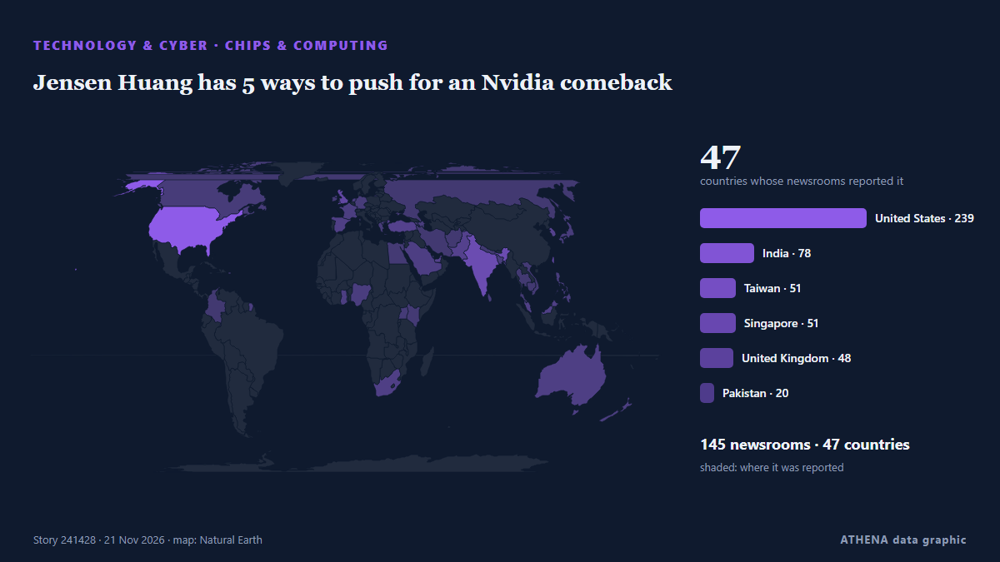

Technology, AI & Cybersecurity
SponsoredPresented by  Cybernetics and Artificial Intelligence Lab Welcome to the Cybernetics and Artificial Intelligence Laboratory, established at the Department of Business Administration of the National and Kapodistrian University of Athens. The lab is headed by Professor Dimitrios Thomakos. The lab aims to do research that can be published in top venues. Our research uses tools and methods of Artificial Intelligence, and lies in the following areas: - Forecasting - Decision making - Cyber security - Finance We are always looking forward to collaborating with exceptional students!
Cybernetics and Artificial Intelligence Lab Welcome to the Cybernetics and Artificial Intelligence Laboratory, established at the Department of Business Administration of the National and Kapodistrian University of Athens. The lab is headed by Professor Dimitrios Thomakos. The lab aims to do research that can be published in top venues. Our research uses tools and methods of Artificial Intelligence, and lies in the following areas: - Forecasting - Decision making - Cyber security - Finance We are always looking forward to collaborating with exceptional students!

Chips & computingJensen Huang has 5 ways to push for an Nvidia comeback
Jensen Huang said he'd be "honored" to return as CEO, but Nvidia's board said it won't reinstate him. from Business Insider
| 9 Nov | 104 |
|---|---|
| 10 Nov | 114 |
| 11 Nov | 83 |
| 12 Nov | 74 |
| 13 Nov | 87 |
| 14 Nov | 39 |
| 15 Nov | 44 |
| 16 Nov | 114 |
| 17 Nov | 102 |
| 18 Nov | 103 |
| 19 Nov | 103 |
| 20 Nov | 54 |
| 21 Nov | 18 |
| 22 Nov | 9 |
China’s Spies Set Sights on A.I. Chips Years Before Nvidia Scandal
China’s espionage agency has been running a secret campaign to help the country’s companies acquire advanced A.I. chips and to gather intelligence on the sector, officials say. from The New York Times (World)
Little Mercury gets its first visitor in years as a pair of spacecraft loop into orbit
CAPE CANAVERAL, Florida: A pair of spacecraft slipped into orbit around Mercury on Saturday after an eight-year cruise through the inner solar system to unravel our littlest planet’s mountain of… from Arab News
White House replaces cyber director Sean Cairncross amid widespread tech outages
Sean Cairncross will be replaced by Pentagon chief information officer Kirsten Davies. from CNBC World
Signal restricts screenshots to block AI agents from reading messages
Signal calls new AI agent safeguards incomplete, urges tech firms to block access to sensitive data. from Express Tribune
SpaceX Hires Democratic-Linked Lobbyists Ahead of Starlink Probes
Elon Musk’s SpaceX has retained five lobbyists from bipartisan Washington firm Mehlman Consulting, including several with close ties to congressional Democrats and past administrations, ahead of… from Kyiv Post
UN Moves to Regulate Killer Robots
Countries move towards regulating killer robots by 2028, but no binding treaty has been secured. from News of Bahrain
Anthropic mathematician claims Claude helped prove the Riemann Hypothesis
Levent Alpoge announces claimed proof of 167-year-old Riemann Hypothesis that concerns distribution of prime numbers and is widely regarded as the most important open question in pure mathematics. from TRT World
Many Etsy Sellers Close Up Shop Over Site’s New A.I. Policy
Numerous longtime users of the online marketplace have left the platform because they do not want their work training artificial intelligence. from New York Times Business
Italy Gives Tesla Green Light for Assisted Driving
The landmark approval makes Italy the first major EU market to allow the technology on its roads, with drivers still required to remain alert. from News of Bahrain
‘A crazy perfect storm’: Satya Nadella explains what caused Microsoft Outlook outage
Microsoft's CEO says AI agents could disrupt advertising-driven business models, forcing companies like Amazon to rethink how they compete for customers. from TechCrunch
New York Mayor Zohran Mamdani injured in soccer match against journalists
Zohran Mamdani revealed in a press briefing that he had torn his Achilles tendon. from The Straits Times
US lawmaker turns up heat on Musk over Ukraine Starshield disruptions
US Representative Jim Himes has warned SpaceX about potential funding cuts if it does not clarify its actions regarding Ukraine. from Times of India
TSMC tightens China AI chip curbs as new US rules close manufacturing loophole, sources say
TAIWAN’s TSMC is tightening restrictions on Chinese chip designers, suspending some previously permitted advanced manufacturing orders and generally… from BusinessWorld
UK Finds Fix for Fridge and Freezer Vulnerability After European Hacks
UK refrigeration flaw could have exposed systems to hackers despite earlier confidence. from Express Tribune
European Commission hit by major cyberattack
The attack has disrupted internal systems for more than ten days, with investigators still assessing whether sensitive staff data was compromised. from The Portugal News
‘Human’ is Cambridge Dictionary’s word of the year
Other new words added to the dictionary in 2026 included “aura farming” and “looksmaxing”. from The Straits Times
Voyager 1 spacecraft reaches one light-day milestone
The spacecraft is now about 26 billion kilometres (16 billion miles) away, according to NASA. from Express Tribune
Nations at UN talks on AI killer robots agree to more talks but no firm commitment to rein them in
UN talks concluded with a commitment to develop regulations for autonomous weapons by 2028. from Arab News
First Historical Classic Industries Expo opens in Hangzhou, China's Zhejiang
HANGZHOU, China, Nov. 20, 2026 /PRNewswire/ — Social media posts about traveling to China for medical care have gained attention lately. from Laotian Times
Anthropic sinks by 10% in premarket after record IPO debut
Anthropic PBC's shares declined by almost 10% in Friday's premarket after investors' enthusiasm about the artificial intelligence (AI) company's historic initial public offering (IPO) cooled. from AzerNews
Greek Prosecutor Rejects New Bid to Reopen Predator Espionage Inquiry
Greece’s Supreme Court prosecutor has rejected another request to reopen the espionage investigation linked to Predator spyware, prompting renewed criticism from a lawyer representing surveillance… from Greek Reporter
UK running offensive cyber operations against Iran, Russia and China - Sky News
Britain is carrying out offensive cyber operations against Iran, Russia, China and North Korea, the commander in charge of its military cyber force told Sky News, a rare public admission that comes… from Iran International (English)
Trump, Xi agreed that military AI decisions should involve humans, Bessent says
The US Treasury Secretary was speaking to CNBC after returning from a meeting between Trump and Xi in China. from The Straits Times
Anthropic CEO Dario Amodei Says Cancer Will Be a Relic in 10 Years. Researchers Say He’s Missing 1 Key Factor
The co-founder thinks AI will help make cancer and other deadly diseases extinct by 2036. from Inc.
Anthropic surges in market debut after biggest IPO on record, despite fears that AI is running amok
The artificial intelligence giant Anthropic rose sharply Thursday after making the biggest public stock offering ever, at one point s. from Mainichi (English)
PJM Proposal to FERC setting expectations on data centers
https://lnkd.in/p/gv63neRJ [https://lnkd.in/p/gv63neRJ]. from Energy Central
Hackers Leak Visa, Mastercard and JPMorgan Customer Data
A ransomware group breached third-party vendors, not the companies’ own systems. from Decrypt
AFP journalist wounded by Israel honored at CPJ awards
AFP journalist Christina Assi, who lost a leg in an Israeli strike reporting from the Lebanese border and has become a vocal campaigner for reporters' safety, was honored by the Committee to Protect… from Al-Monitor
TikTok launches tool to help public figures detect deepfakes globally
The tool is being gradually rolled out, allowing politicians and popular TikTok accounts to report AI-generated content using their likeness without consent. from Free Malaysia Today
UAE jumps six places to rank fifth globally in UN digital government index
UAE advances to fifth globally in UN E-Government Development Index. from Gulf News
Police raid Turkiye’s pro-opposition broadcaster Sozcu TV
ISTANBUL: Turkish police raided the Istanbul headquarters of the pro-opposition Sozcu TV and its media group early on Tuesday, conducting arrests and installing a government-appointed administrator… from Arab News
What Anthropic’s record $81 billion IPO means for Gulf investors
The creator of the Claude chatbot has raised $81.3 billion in the world's largest IPO, and Gulf investors have emerged as major players. from Al-Monitor
Anthropic’s blockbuster debut tests Wall Street’s faith in AI boom
ANTHROPIC notched a valuation of about $2 trillion in its Nasdaq debut on Thursday, edging past SpaceX’s June… from BusinessWorld
Who are Anthropic’s 7 co-founders? Meet the former OpenAI colleagues now worth billions
The company counts physicists, a former journalist and an associate of the pope among its guiding lights The paper fortunes of Anthropic’s seven co-founders reached a total of more than $180bn on… from Guardian Business